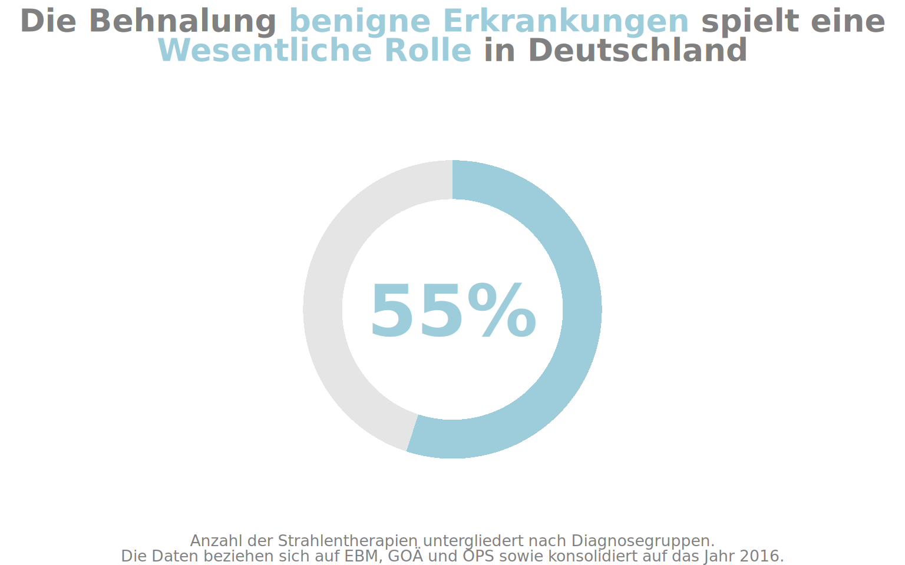
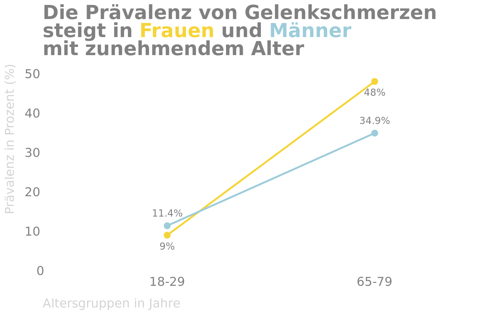
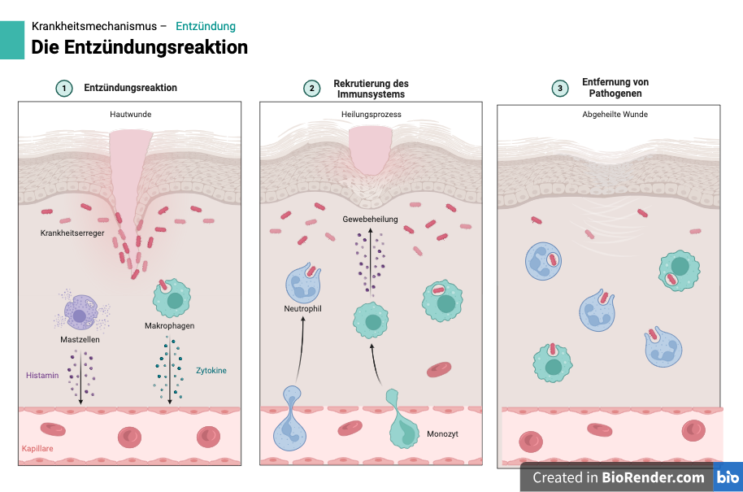
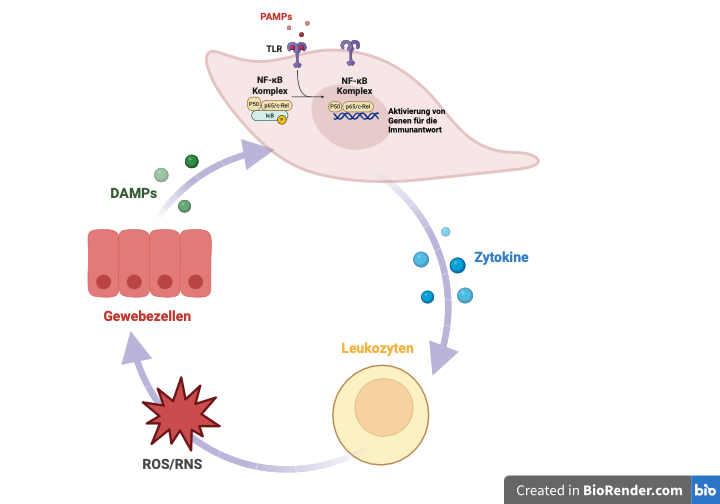
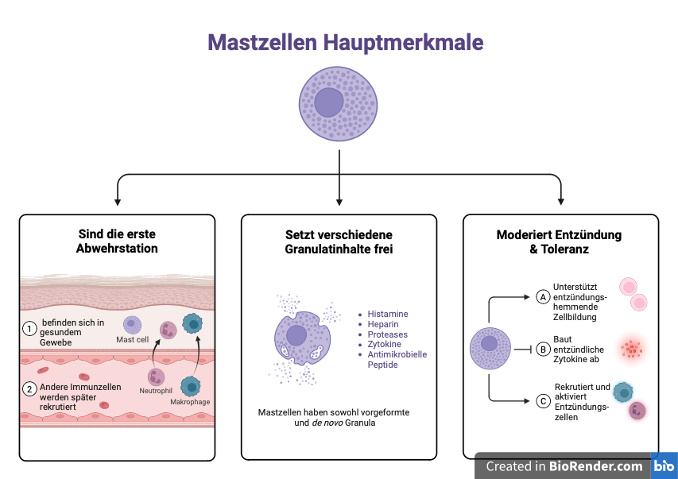

Gutartige Erkrankungen
Einführung
Strahlentherapie bei nicht bösartigen Erkrankungen
Die Radioonkologie wird weltweit durch Organisationen wie die ESTRO (Europa) und die ASTRO (USA) sowie andere nationale Gesellschaften vertreten. Die ESTRO konzentriert sich hauptsächlich auf die Strahlentherapie bei Krebs. In ihrem jüngsten Strategiepapier wird betont: „Es wird zwar anerkannt, dass sich die nicht-onkologischen Indikationen für die Strahlentherapie im Laufe der Zeit erweitern können, doch die formale Aufnahme des Begriffs ‚Onkologie‘ in das Visionspapier unterstreicht, dass die Hauptindikationen für die Strahlentherapie und damit der Schwerpunkt dieser Disziplin weiterhin in der Onkologie liegen.” Die ASTRO konzentriert sich ebenfalls auf die Strahlentherapie bei Krebspatienten und erwähnt nicht ausdrücklich die Bestrahlung bei Nicht-Krebserkrankungen.1
Die Nutzung der Strahlentherapie variiert stark je nach Erkrankung und Land. Zum Beispiel wird die Strahlentherapie im Vereinigten Königreich, in großen Teilen Europas und Nordamerikas nur selten für diese Indikationen verwendet2.
Trotzdem wird die Strahlentherapie schon lange für nicht-krebsartige Erkrankungen genutzt. Die erste gutartige Erkrankung, die mit Strahlentherapie behandelt wurde, war eine juvenile Arthritis im Jahr 1898.3
In Deutschland spielt die Strahlentherapie bei gutartigen Erkrankungen eine wichtige Rolle. Im Jahr 2016 wurden hier 258.946 gutartige entzündliche Erkrankungen und Tumoren (1%) mit Strahlentherapie behandelt. Abbildung 1 zeigt, dass die Strahlentherapie sogar häufiger bei gutartigen als bei bösartigen Erkrankungen eingesetzt wurde4.
Von den über 300 aktiven strahlentherapeutischen Einrichtungen in Deutschland bietet jede einzelne Strahlentherapie bei gutartigen Erkrankungen an.
Die Behandlung nicht-bösartiger Erkrankungen mit ionisierenden Strahlen in niedrigen bis mittleren, teilweise auch hohen Dosen ist oft erfolgreich. Diese Erfolge tragen häufig zur Erhaltung oder Wiederherstellung der Lebensqualität bei, zum Beispiel durch Schmerzlinderung oder Verbesserung zuvor eingeschränkter Funktionen.5
Prävalenz von Gelenkschmerzen in Deutschland
Akute Schmerzen
Akute Schmerzen dauern Sekunden bis maximal Wochen an und sind an erkennbare Auslöser gekoppelt.6
Chronische Schmerzen
Chronische Schmerzen sind nicht zwingend an schädigende Faktoren gekoppelt und sind gekennzeichnet durch anhaltende oder wiederkehrende Schmerzen, die mindestens drei Monate andauern.6
Gelenkbeschwerden und -schmerzen gehören weltweit zu den häufigsten Einschränkungen, die Menschen bei der Ausübung ihrer Alltagsaktivitäten Schwierigkeiten bereiten und ihre Lebensqualität verringern können.6 Diese sind häfiger im Alter Abbildung 2.
Definition
Die Definition für Schmerz lautet nach der Weltschmerzorganisation International Association for the Study of Pain „ein unangenehmes Sinnes- und Gefühlserlebnis, das mit aktueller oder potentieller Gewebeschädigung verknüpft ist oder mit Begriffen einer solchen Schädigung beschrieben wird“7
Prävalenz von Schmerzen in Deutschland
In Deutschland 57,9 % der Frauen und 52,2 % der Männer geben an, in den letzten 12 Monaten Gelenkschmerzen gehabt zu haben.

Entzündung

Ganz allgemein gesprochen ist Entzündung die Reaktion des Immunsystems auf einen noziven Reiz. Dabei kann es sich um einen mikrobiellen Reiz handeln, aber auch um eine Autoimmunerkrankung, eine allergische Reaktion, eine Stoffwechselerkrankung oder einen physikalischen Reiz.
Entzündung wird induziert, reguliert und aufgelöst Diagramm 4. Dieses Prozes ist gefolgt von einer Gewebereparatur. Wenn jedoch einer dieser stark regulierten Schritten nicht zum Abschluss kommt, kann eine chronische Entzündung hervorgerufen werden.8
flowchart LR
A(Auslösung) --> B(Entzündungsreaktion)
B --> C{Ablauf}
C --> D(Chronifizierung)
C --> E(Auflösung)
E --> F(Gewebereparatur)
Aulus Cornelius Celsus (25 v. Chr.-50 n. Chr.) definierte die vier Hauptanzeichen einer Entzündung mit seiner Aussage: “Notae vero inflammationis sunt quatuor: rubor et tumor cum calore and dolore”.
Klinisch sind fünf Kardinalzeichen von Enzündung erkannt:
- Hitze
- Schmerz
- Rötung
- Schwellung
- Funktionsverlust
lateinisch: calor, dolor, rubor, tumor und functio laesa.9,10 Diese makroskopischen Anzeichen spiegeln die Gefäßerweiterung und das Eindringen von Immunzellen in das entzündete Gewebe wider, wodurch die akute lokale Entzündung ausgelöst und aufrechterhalten wird.8 Eine Darstellung dises Prozess findet sich in Abbildung 3.
Die zugrunde liegenden Mechanismen von Entzündung blieben bis zum 19. Jahrhundert unbekannt. Ilya I. Mechnikov entdeckte die Phagozyten und definierte den Entzündungszustand als “Läsion der Gefäße, die von der reizenden Ursache angegriffen werden”. Je nach Art der “reizenden Ursache” unterscheiden Hawiger und Zienkiewicz9 folgende Arten von Entzündungen: mikrobielle, autoimmune, allergische, metabolische und physikalische s. auch Tabelle 1. Zudem wird Entzündung in Abwesenheit von Krankheitserregern und deren Produkten als sterile Entzündung bezeichnet.11
Weismann zählte jedoch mehrere Erkrankungen auf, die nicht mit den klassischen Entzündungszeichen einhergehen und für die Entzündungen verantwortlich gemacht werden, darunter: Atherosklerose, Fettleibigkeit, Depressionen, Alzheimer, Schizophrenie und Osteoporose.12
Erstaunlicherweise haben sogar soziale Isolation und Familienstand einen Einfluss auf die Entzündung und damit auf das Überleben.13,14
| Die ursachenbezogene Klassifizierung von Entzündungen | ||
|---|---|---|
| Art der Entzündung | Ursache der Entzündung | Beispiele für Krankheiten, die durch eine bestimmte Art von Entzündung verursacht werden |
Während Entzündung lange Zeit als krankhaftes Phänomen angesehen wurde, verstanden John Hunter (18. Jahrhundert) und Elie Metchnikoff (19. Jahrhundert), dass sie ein physiologisches Ereignis ist, das darauf abzielt, einen sterilen oder infektiösen Insult zu bekämpfen.15
Dementsprechend ist vielleicht nicht überraschend, dass die Grenze zwischen normalen adaptiven homöostatischen Anpassungen und Entzündungen unscharf ist.16
DAMPS und PAMPS
Während die adaptive Reaktion mit der Zeit eine hochspezifische Reaktion entwickelt, reagiert die angeborene Reaktion sofort auf spezielle Strukturen, die auf Krankheitserregern zu finden sind. Sie werden als pathogen-assoziierte molekulare Muster (PAMPs) bezeichnet. Lipopolysaccharide (LPS), die spezifisch für die Zellwände gramnegativer Bakterien sind, sind ein typisches Beispiel für ein solches Muster.17
DAMPs werden von pattern recognition receptors (PRRs), wie z. B. Toll-like-Rezeptoren (TLRs), erkannt11
Damage-associated molecular patterns (DAMPs) werden bei Gewebeschäden freigesetzt und lösen ebenso eine Entzündungsreaktion aus Abbildung 5

LAMPS
Lifestyle-associated molecular patterns (LAMPs) ist ein ein Begriff eingeführt von Zindel und Kubes11
Die sterile Entzündung bezieht sich auf eine Entzündungsreaktion auf schädliche Agenzien, bei denen es sich nicht um Krankheitserreger und ihre Produkte handelt (d. h. nicht um PAMPs).
Eine sterile Entzündung und die anschließende Gewebereparatur hängen von einer gut orchestrierten Migrationssequenz von Leukozyten zum und vom Ort der Verletzung ab.11
Chemische Botenstoffe
Ein Schritt bei diesem intrazellulären Prozess ist die Translokation des Proteins NF-κ B aus dem Zytoplasma in den Zellkern. In seiner Rolle als Transkriptionsfaktor unterstützt NF-κB die Transkription der entsprechenden Zytokin-Gene.
Die produzierten Zytokine veranlassen anschließend die weißen Blutkörperchen (Leukozyten), reaktive Sauerstoffspezies (ROS) und reaktive Stickstoffspezies (RNS) freizusetzen, die Bakterien und Viren abtöten können.17
Eine Überproduktion von Zytokinen (ein Zytokinsturm) durch Immunzellen zur Überwindung von Krankheitserregern kann jedoch tödlich sein.18
Heilung/Auflösung
Das Abklingen der Entzündung ist ein aktiv regulierter Prozess, der die Verringerung und Beendigung des Eindringens von Immunzellen in das Gewebe, die Gegenregulierung von Zytokinen und Chemokinen, die Apoptose der abgestorbenen Immunzellen mit anschließender Beseitigung durch Makrophagen sowie die Rückführung der verbleibenden Immunzellen in das Blut oder die Lymphgefäße umfasst.8
Mastzellen sind beispielhaft in der Enzündungsprozess involviert Abbildung 6.

Und dennoch, lange bevor Entzündungsprozesse verstanden oder gar definiert werden konnten, wurden verschiedene therapeutische Ansätze zur Behandlung verschiedener Arten von Entzündungskrankheiten vorgeschlagen.15
Hierunter auch die Strahlentherapie. Im Allgemeinen hat die Röntgenbestrahlung mit höheren Dosen (z. B. Einzeldosen ≥ 2 Gy) entzündungsfördernde Wirkungen und führt zu entzündlichen Prozessen als übliche Toxizität der Strahlentherapie [1]. Im Gegensatz dazu moduliert die Niedrigdosis-Strahlentherapie (LD-RT: Einzeldosen < 1 Gy) eine Vielzahl von Entzündungsprozessen und zeigt eindeutig entzündungshemmende Eigenschaften.19
Zudem während in der Krebstherapie immunsuppressive Effekte der RT unerwünschte Nebenwirkungen sind, sind sie bei der Behandlung von entzündlichen, degenerativen Erkrankungen des Bewegungsapparats und hyperproliferativen gutartigen Erkrankungen erwünscht.20
ICD-10-Codes gutartige Erkrankungen in der Strahlentherapie
| ICD-10-Codes für die Kodierung gutartiger Erkrankungen in der Strahlentherapie | |
|---|---|
| Zusammenstellung nach anatomischen Regionen/Diagnosen | |
| ICD 10 | DIAGNOSE |
| FUSS | |
| KNIE | |
| SCHULTER | |
| HÜFTE | |
| ARM | |
| HAND | |
| FIBROMATOSEN | |
Fersensporn
Ätiologie
Anatomie
Histology
Korrelation
Alter
Geschlecht
Gewicht
Fußstellung
Plantar fasciitis
Schmerzsyndrom der Achillessehne
Entzündung des Schultergelenks
Epicondylitis radialis/ulnaris
Arthrose
Morbus Dupuytren
Morbus Ledderhose
Endokrine Orbitopatie
Meningiome
Arthritis
Arthrose
Entzündung
Strahlentherapie
Schmerzlindernde Wirkung
Antientzündliche Wirkung
In der Regel erfolgen 6 Bestrahlungen mit sehr niedrigen Einzeldosen von 0,5 Gy mit einer Gesamtdosis von 3,0 Gy inerhalb von 3 Wochen. Im Falle eines Teilerfolgs ist eine 2. Serie möglich.
Literaturverzeichnis
1.
IORBC. IORBC Homepage.
2.
McKeown SR, Hatfield P, Prestwich RJ, Shaffer RE, Taylor RE. Radiotherapy for benign disease; assessing the risk of radiation-induced cancer following exposure to intermediate dose radiation. Br J Radiol. 2015;88(1056):20150405.
3.
Torres Royo L, Antelo Redondo G, Árquez Pianetta M, Arenas Prat M. Low-Dose radiation therapy for benign pathologies. Rep Pract Oncol Radiother. 2020;25(2):250-254.
4.
Popp W, Sickinger C, Schaller-Steiner J, Willich N. Ressortforschungsberichte zum Strahlenschutz. Published online December 1, 2020.
5.
Mücke R, Micke O, Seegenschmiedt MH, Kriz J. S2e-Leitlinie gutartiger Erkrankungen. Published online November 2022.
6.
Fuchs J, Prütz F. Prävalenz von Gelenkschmerzen in Deutschland. Journal of Health Monitoring. Published online 2017.
7.
Raja SN, Carr DB, Cohen M, et al. The Revised IASP definition of pain: Concepts, challenges, and compromises. Pain. 2020;161(9):1976-1982.
8.
Wunderlich R, Ruehle PF, Deloch L, et al. Interconnection between DNA damage, senescence, inflammation, and cancer. FBL. 2017;22(2, 2):348-369.
9.
Hawiger J, Zienkiewicz J. Decoding inflammation, its causes, genomic responses, and emerging countermeasures. Scand J Immunol. 2019;90(6):e12812.
10.
Institut für Qualität und Wirtschaftlichkeit im Gesundheitswesen. In brief: What is an inflammation? In: InformedHealth.org [Internet]. Institute for Quality and Efficiency in Health Care (IQWiG); 2021.
11.
Zindel J, Kubes P. DAMPs, PAMPs, and LAMPs in Immunity and Sterile Inflammation. Annu Rev Pathol. 2020;15:493-518.
12.
Weissmann G. It’s Complicated: Inflammation from Metchnikoff to Meryl Streep. The FASEB Journal. 2010;24(11):4129-4132.
13.
Laugesen K, Baggesen LM, Schmidt SAJ, et al. Social isolation and all-cause mortality: A population-based cohort study in Denmark. Sci Rep. 2018;8(1):4731.
14.
Heffner KL, Waring ME, Roberts MB, Eaton CB, Gramling R. Social isolation, C-reactive protein, and coronary heart disease mortality among community-dwelling adults. Soc Sci Med. 2011;72(9):1482-1488.
15.
Cavaillon JM. Once upon a time, inflammation. J Venom Anim Toxins Incl Trop Dis. 2021;27:e20200147.
16.
Antonelli M, Kushner I. It’s time to redefine inflammation. FASEB j. 2017;31(5):1787-1791.
17.
Neumann J, Scherhag A, Otten S, et al. Chronic Inflammation Under the Microscope. Published online January 9, 2017.
18.
Takeuchi O, Akira S. Pattern Recognition Receptors and Inflammation. Cell. 2010;140(6):805-820.
19.
Rodel F, Frey B, Gaipl U, et al. Modulation of Inflammatory Immune Reactions by Low-Dose Ionizing Radiation: Molecular Mechanisms and Clinical Application. Current Medicinal Chemistry. 2012;19(12):1741-1750.
20.
Rückert M, Deloch L, Fietkau R, Frey B, Hecht M, Gaipl US. Immune modulatory effects of radiotherapy as basis for well-reasoned radioimmunotherapies. Strahlenther Onkol. 2018;194(6):509-519.
21.
Seegenschmiedt MH. Refresher 7: AG Gutartige Erkrankungen, Erkrankungen an Knochen und Gelenken. Presented at: DEGRO 2024; June 14, 2024; Kassel.